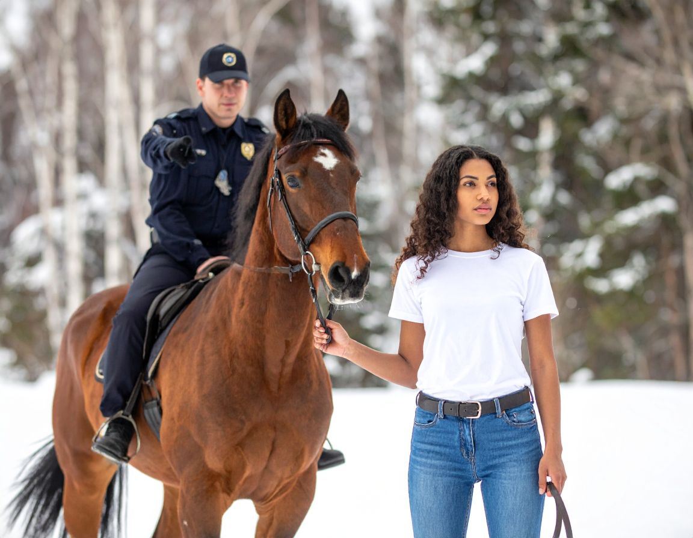

|  |
Brooklyn stood beside the Mountie in the middle of the thick forest, her boots sinking slightly into the damp ground as the chilly wind swept through the pine trees.
The Mountie lifted his arm and pointed toward a narrow trail disappearing into the shadows. “That’s the direction I saw your uncle heading,” he explained, his voice calm but serious.
“He looked like he was travelling fast, like he didn’t want to be followed.” Brooklyn stared down the path, her stomach twisting with worry and curiosity.
After months without hearing from her uncle, she could hardly believe someone had finally seen him.
|